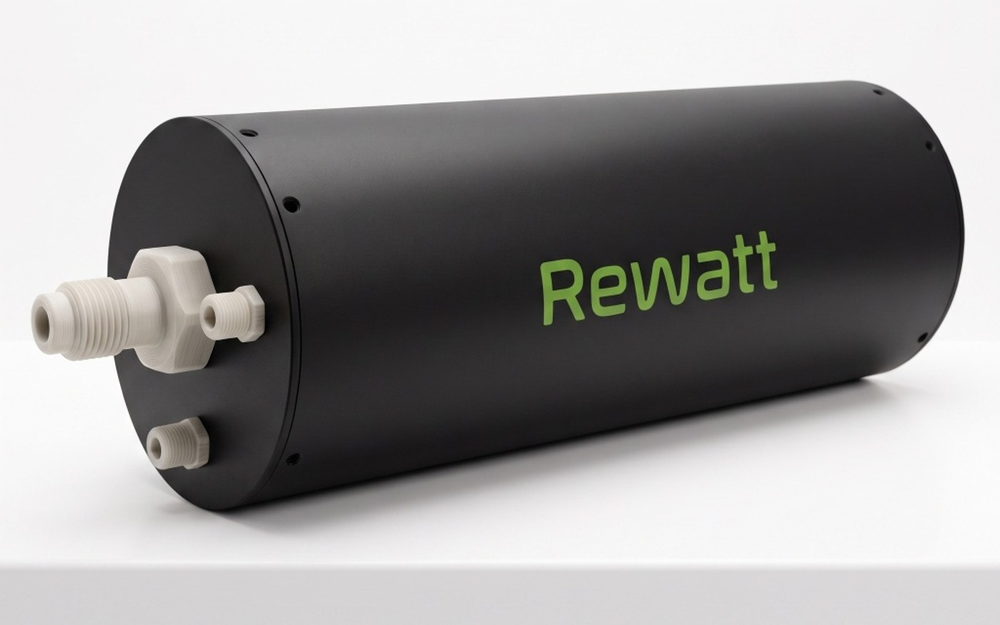
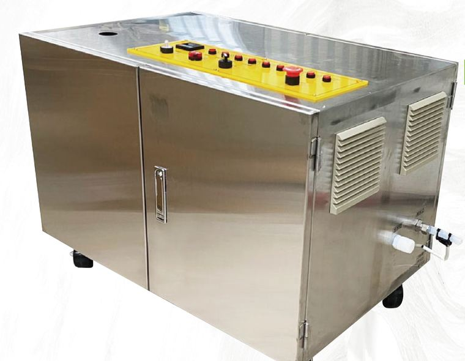
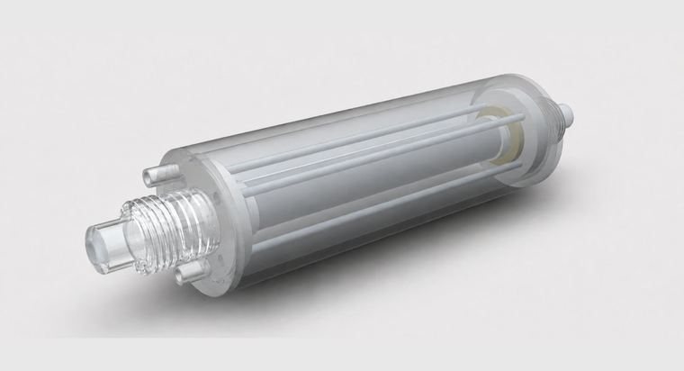

EFFICIENCY
98%+
電熱轉換效率
公開資料
公開資料
奈米配方薄膜直接鍍於超純石英外壁,金屬零接觸流體。適用於半導體濕製程、化學藥液與超純水加熱,在小體積內達成高效率、快升溫、長壽命三項工程目標。

加熱薄膜直接鍍在石英管外壁,管壁即發熱體;流道內只有 100% 石英。長度、功率、接頭可依製程客製,可入槽、可接管路,也可整合多支串並聯於設備內。適用 SC1/SC2、稀硫酸與超純水;含氟藥液(HF/BOE)與熱鹼會侵蝕石英,需個案評估。
背掛式安裝,10–30 kW 三種功率階,配 SCR 相位控制。用於超純水/純水在點使用前的即熱升溫,常見場景為晶圓清洗、光阻沖洗、腔體潤洗。
把加熱器攤平成一片。上蓋 / 鍍膜發熱層 / 石英流道板 / 底座疊合,最薄僅 40 mm,精巧好整合上機台。接液材質為石英與 PVDF,配過溫與漏液雙重防護。
需要更高升溫就串聯,需要更大流量就併聯——同一顆模組,兩個方向都能長。
大功率中央供水首選。75 kW 由 8.3 kW × 9 組石英加熱模組構成,PLC 控制並配多重安全保護。落地整機,不佔壁面。

管路就地加熱,內部 100% 石英管接液。單顆 3 kW,串聯可達 9 kW;進出口徑 3/4″,直接串在既有管線上。

幾乎所有加熱器的失效,都發生在發熱體與液體的交界。我們的做法是讓那個交界根本不存在。
奈米配方發熱層直接鍍在石英管外壁。通電後薄膜升溫,熱穿過約 1 mm 的石英壁進入流體。導體與藥液之間永遠隔著一整層石英——這是結構決定的,不靠塗層或密封件維持。
因此沒有金屬離子溶出的來源,濕式路徑上也沒有 O-ring——業界最主要的微粒來源,在這個結構裡不存在。
| 加熱方式 | 結構 | 流體碰到什麼 | 熱容 / 響應 | 典型效率 | 常見弱點 |
|---|---|---|---|---|---|
| 鍍膜 × 石英本廠 | 只有石英 | 極小 / 秒級 | 98%+ | 鍍膜端子區為應力重點 | |
| 纏繞式加熱管 | 石英 / PFA | 中等 / 十秒級 | 85–92% | 纏繞不均易生局部熱點 | |
| IR 燈 / 鹵素燈 | 石英(非接觸) | 低 / 秒級 | 60–85% | 燈管壽命短、需頻繁更換 | |
| PFA 內埋線圈 | PFA・線圈就在液中 | 低 / 秒級 | 90–95% | PFA 老化與應力龜裂 |
標準機殼 600 × 900 × 255 mm(W × H × D)。側邊風扇+濾網、壁掛安裝。前面板集中人機介面、溫控器、選擇開關、指示燈、緊急停止、流量計;內部整合 MCCB、電力控制模組、繼電器與端子台。